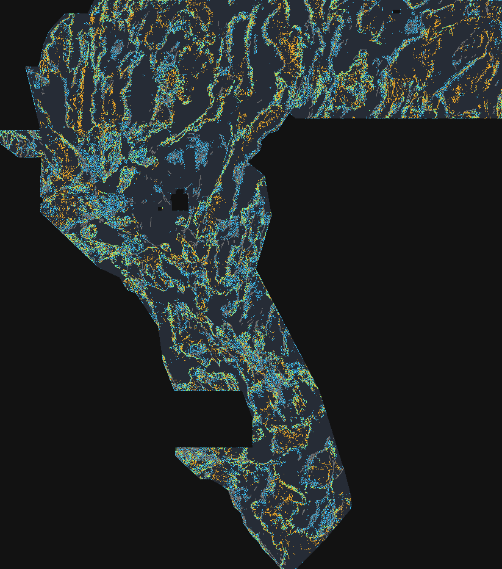

An auditable, fully automated fault-discovery submission for the DOE GEMS Prize Challenge (DrivenData #306). The file below was generated, validated and published by code — no human inspected it, and it cannot reach this page unless all 17 format checks passed.
| file | gems85-geopb-crest-90000dots-sep4-20261022T222707Z-a4e1f57c-zeros.tif |
|---|---|
| sha256 | ba33ea18936e6324037457e1ff5070d8e879b7b29a25b4ae2c0003bc509a567f |
| format | single-band float32 GeoTIFF · EPSG:32611 · 3730 × 3292 · 100 m · all values finite and in [0, 1] · no nodata tag |
| emitting pixels | 90,000 |
| pixels on a mapped fault | 0 |
H85-1 GEO-Pb 2of3-physics juxtaposition crest, 90000 dots sep4px, 0 within 200m of catalogue, holdout DTI 0.0984 (UNSCORED)123 characters (the form asks for a short comment; this one names the hypothesis, the budget and the holdout result).
Predicted values must be in range [0, 1]. A NaN fails
0 ≤ v ≤ 1 under IEEE-754 comparison, so any raster with NaN outside the survey
footprint can trip that check. This file is all-finite: zeros outside the footprint, no
nodata tag, every value a real number in [0, 1]. src/gems85/submission.py::validate
re-opens the written file and asserts it, and write_submission() refuses to return a
path whose validation failed.
400 m max-pooled preview. Cyan = this candidate's dots · amber = h33 (0.2778 OWNER-REPORT) dots · green = both within the same 400 m cell · grey = USGS/INGENIOUS catalogue (candidate has zero dots within 200 m of it). Measured at full resolution: 37.9 % of candidate dots lie within 3 px of an h33 dot (gate ≤ 70 %). No human inspected this image as an approval step — approval is the automated validation below.
| check | result |
|---|---|
| file exists | PASS |
| single band | PASS |
| dtype float32 | PASS |
| shape 3730x3292 | PASS |
| crs epsg 32611 | PASS |
| transform matches template | PASS |
| resolution 100m | PASS |
| no nan inside footprint | PASS |
| no inf inside footprint | PASS |
| values in 0 1 inside footprint | PASS |
| all finite whole raster | PASS |
| values in 0 1 whole raster | PASS |
| outside footprint is zero | PASS |
| no nodata tag | PASS |
| has positive predictions | PASS |
| no prediction outside footprint | PASS |
| zero mass within 2px of catalogue | PASS |
{
"review_date_utc": "2026-10-23",
"lane_status": "unassigned",
"hypothesis": "No lane-authorized experiment was run. Four next-step geological hypotheses are listed in research/review-2026-10-23.md as proposals only; none has been tested.",
"mechanism": "Not assessed in a new experiment. Existing candidate rationale is inherited from archived records and is not evidence of new-candidate performance.",
"named_non_fault_process_that_could_mimic_it": "Volcanic flow margins, lithologic contacts, erosional scarps, and geophysical survey seams can mimic structural edges; candidate-specific confounder testing remains unrun.",
"holdout_dti": {
"label": "HOLDOUT-DTI",
"evaluator_version": "gems85-holdout-v1.0.0",
"value": 0.08082,
"ci95": [
0.07356,
0.08808
],
"n_withheld_positives": 60988,
"status": "inherited archival report for S85-CTXFUS50; not recalculated in this review and not an organizer score"
},
"correlation_overlap_vs_registry": {
"n_registry_rasters": 17,
"max_abs_spearman": 0.17111389777156674,
"max_dot_overlap_within_3px": 0.9899081106920912,
"thresholds": {
"spearman_abs_max": 0.9,
"dot_overlap_max": 0.7
},
"raw_literal_gate": "FAIL: raw max overlap exceeds 0.70; chance-corrected exemption is not authorized",
"overlap_with_h33_winner": 0.37889732830509376,
"provenance": "archived evidence/duplicate_check_session.json; registry saturation contradiction remains open"
},
"raster": {
"path": "docs/downloads/gems85-s85-ctxfus50-37654dots-sep4-20261022T232600Z-4f38c2b3-zeros.tif",
"sha256": "516730c0300e2bbd49f490b3bcb1d45dc6d59e23ab74f45bb9daf8fa9a9b7e2b",
"status": "pre-existing candidate; no new TIF generated in this review"
},
"validator_output": {
"all_checks_passed": true,
"status": "PASS when re-run on the written candidate bytes using scripts/check_submission.py",
"no_nan_inside_footprint": true,
"values_in_0_1": true,
"crs_shape_transform_match": true,
"crs": "EPSG:32611",
"shape": [
3730,
3292
],
"transform": [
100.0,
0.0,
243350.0,
0.0,
-100.0,
4508550.0
],
"caveat": "Format PASS is not submission clearance; S85 candidate audit reports 12 programmatic checks, not the different 17-check GEO-Pb artifact audit."
},
"submission_name": "gems85-s85-ctxfus50-37654dots-sep4-20261022T232600Z-4f38c2b3-zeros.tif",
"submission_note": "S85-CTXFUS50; blocked pending lane assignment and strict registry-overlap clearance",
"submission_note_characters": 81,
"verdict": "negative"
}Method & evidence → the hypothesis, the holdout protocol, the
leakage canary, the ablation and the negative results.
How to submit → a step-by-step walkthrough of the DrivenData
submission form.
Data & sources → every input file, its SHA-256 and its official link.
GEMSDOE85 was worked by independent lanes in parallel. The current primary is the
S85-CTXFUS session candidate above. The GEO-Pb juxtaposition
lane (H85-1) supplied the crest field that is one half of the fusion; its standalone files are
the “previous GEO-Pb” alternates in the download list. The transtensional pull-apart +
gravity worm duplex lane (H85-duplex) reached main first and its artifacts
are kept alongside these ones, untouched:
docs/downloads/:
duplex (42,000 dots) ·
TI-pure (38,000) ·
worm-pure (46,000)The two lanes' holdout numbers are not comparable. They use
different evaluators, different fold geometry and different withheld-positive counts, so the
duplex lane's reported 0.1542 and this lane's 0.09838 cannot be ranked against each other. Doing
so would be exactly the apples-to-oranges error this repository's instrument calibration was
built to catch. Both lanes' artifacts are published; neither has an organizer score. The two
lanes do now share one metric implementation, and
tests/test_metric.py asserts the fast O(29N) path equals a literal brute-force
transcription of the official definition — so at least the ruler is common.